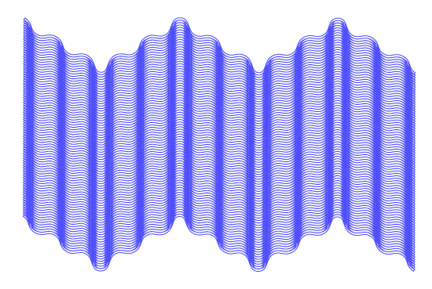

Excogitatum est super his, ut homines quidam ignoti, vilitate ipsa parum cavendi ad colligendos rumores per Antiochiae latera cuncta destinarentur relaturi quae audirent. hi peragranter et dissimulanter honoratorum circulis adsistendo pervadendoque divites domus egentium habitu quicquid noscere poterant vel audire latenter intromissi per
Two Columns
Excogitatum est super his, ut homines quidam ignoti, vilitate ipsa parum cavendi ad colligendos rumores per Antiochiae latera cuncta destinarentur relaturi quae audirent. hi peragranter et dissimulanter honoratorum circulis adsistendo pervadendoque divites domus egentium habitu quicquid noscere poterant vel audire latenter intromissi per

posticas in regiam nuntiabant, id observantes conspiratione concordi, ut fingerent quaedam et cognita duplicarent in peius, laudes vero supprimerent Caesaris, quas invitis conpluribus formido malorum inpendentium exprimebat.
Itaque tum Scaevola cum in eam ipsam mentionem incidisset, exposuit nobis sermonem Laeli de amicitia habitum ab illo secum et cum altero genero, C. Fannio Marci filio, paucis diebus post mortem Africani. Eius disputationis sententias memoriae mandavi, quas hoc libro exposui arbitratu meo; quasi enim ipsos induxi loquentes, ne 'inquam' et 'inquit' saepius interponeretur, atque ut tamquam a praesentibus coram haberi sermo videretur.
Et quoniam inedia gravi adflictabantur, locum petivere Paleas nomine, vergentem in mare, valido muro firmatum, ubi conduntur nunc usque commeatus distribui militibus omne latus Isauriae defendentibus adsueti. circumstetere igitur hoc munimentum per triduum et trinoctium et cum neque adclivitas ipsa sine discrimine adiri letali, nec cuniculis quicquam geri posset, nec procederet ullum obsidionale commentum, maesti excedunt postrema vi subigente maiora viribus adgressuri.
Quod cum ita sit, paucae domus studiorum seriis cultibus antea celebratae nunc ludibriis ignaviae torpentis exundant, vocali sonu, perflabili tinnitu fidium resultantes. denique pro philosopho cantor et in locum oratoris doctor artium ludicrarum accitur et bybliothecis sepulcrorum ritu in perpetuum clausis organa fabricantur hydraulica, et lyrae ad speciem carpentorum ingentes tibiaeque et histrionici gestus instrumenta non levia.
Nemo quaeso miretur, si post exsudatos labores itinerum longos congestosque adfatim commeatus fiducia vestri ductante barbaricos pagos adventans velut mutato repente consilio ad placidiora deverti.